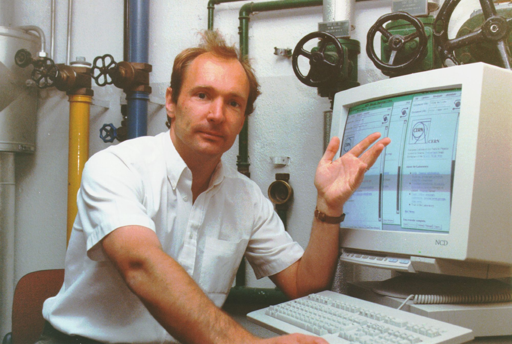

Pagină HTML simplă.
Titlu mai mic.
Titlu și mai mic.
Aceasta este un paragraf
Pagini exemplu de la curs:
Laborator:
Execiții:
Teme:
Note to self: Face html de la zero.
Exemplu de brake row
Browsere: w3m, lynx, elinks, ladybird,
dillo, sau ce era la curs, edge sau ceva.
Html History
1989 Sir Tim Berners-Lee invented the internet.

etc.
Editoare html: Notepad++; VS Codium; neovim, etc.
Formatarea textului în HTML:
Pentru text bold folosim "< b >"
italic folosim "< i >"
superscript "< sup >"
Soft Matematic:
Notițe
- 12/10 - Am reparat sync-ul automat dintre PC și serverul nginx; Am adăugat exemplul din cursul 1, modificat
pt. că pe elearning era embedded și moștenea css de la elearning.
- 13/10 - 14:10 START
- 14/10 - Am adaugat un exemplu parse-unit cu pandoc de mamrkdown convertit în html și embeduit cu < iframe ... > în pagina HTML
- 15/10 - Am schimbat serverele de nginx și gitea din termux pe proot de debian pe termux. Asta a rezolvat o eroare la gitea. Pe lângă asta, acum /var/www se actualizează periodic cu $git fetch din repo-ul ăsta printr-un cronjob.
.
Acest site este host-uit pe un telefon
mobil... adică http din buzunar.